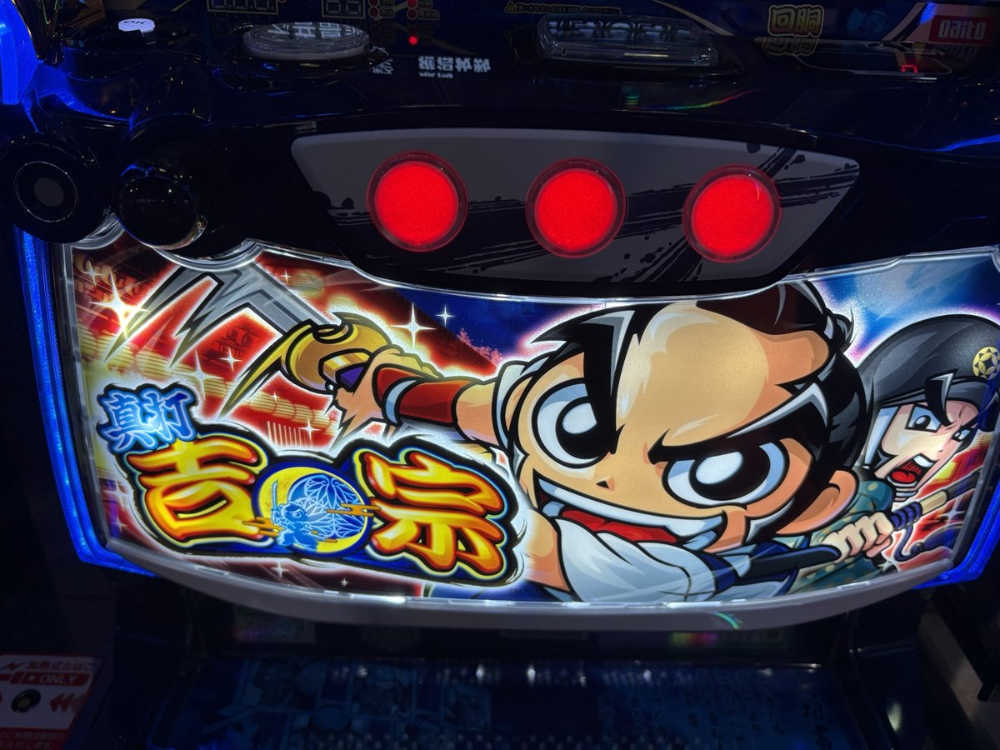
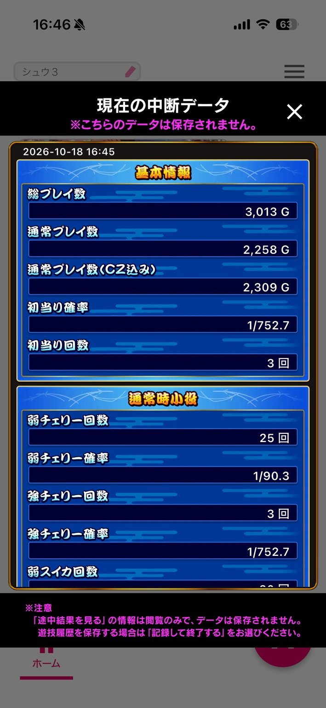
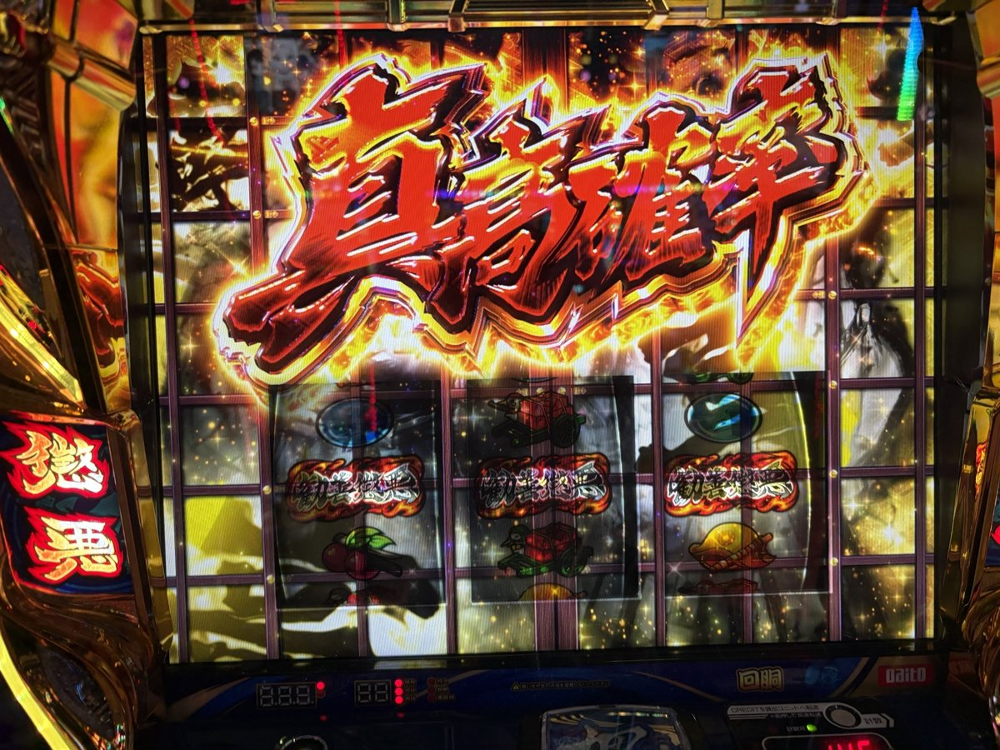
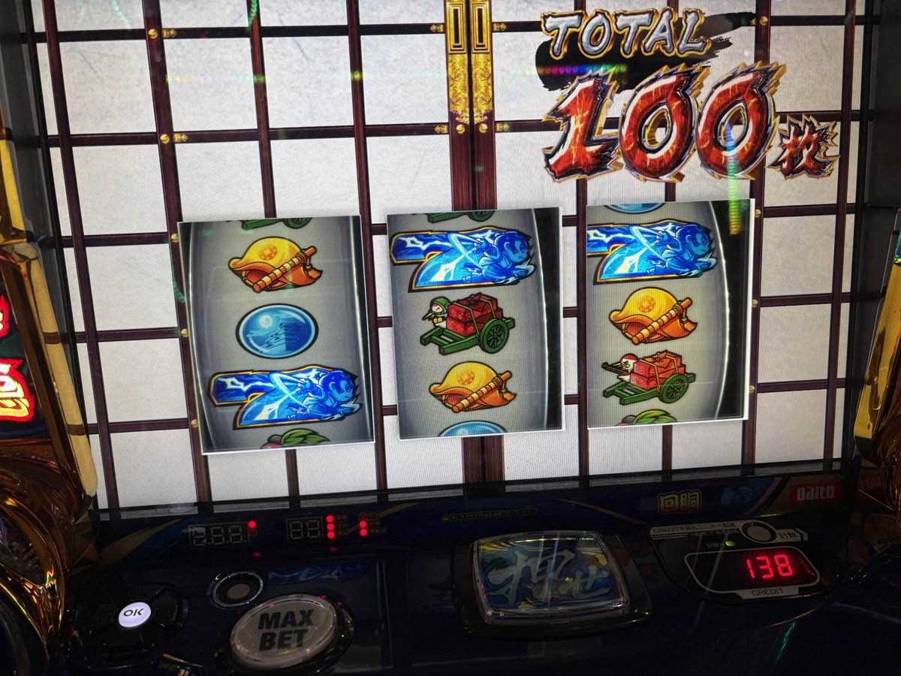
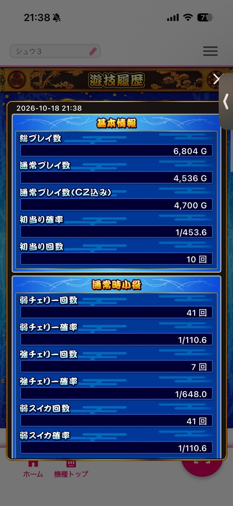

機種別実戦記録
真打 吉宗初打ち｜AT間1,500Gの天井へ。それでも真高確率は馬鹿みたいに面白かった
初打ちでAT間1,500Gの天井へ。後半は当たり方が改善したものの、投資3,076枚・回収580枚で−2,496枚。真高確率の魅力と、千両箱を残して時間切れになった一日を振り返ります。
初打ちの結果：−2,496枚
ついに「真打 吉宗」を打ってきました。初打ちです。
動画はたくさん見ていたものの、ハイリスク・ハイリターンな台という印象があって、これまでは敬遠していました。
そんな俺が今回打つことになったのは、着席前に＋1,400枚と表示され、1周期を見てやめられている台を見つけたから。「ものは試し」で座ってみました。
結果は、投資3,076枚、回収580枚で、−2,496枚。初打ちから、なかなか厳しい一日になりました。
| 項目 | 結果 |
|---|---|
| 投資 | 3,076枚 |
| 回収 | 580枚 |
| 収支 | −2,496枚 |
| 総プレイ数 | 6,804G |
| 通常プレイ数 | 4,536G |
| 通常プレイ数（CZ込み） | 4,700G |
| AT初当たり | 10回・1/453.6 |
| CZ成功／突入 | 9／17回（52.9%） |
| 最大獲得枚数 | 1,264枚 |
投資・回収は本人の記録、ゲーム数と回数は最終ダイトモ。最大獲得枚数は回収枚数とは別です。

タップして拡大 ↗ものは試しで座ったら、AT間1,500Gの天井へ
序盤のメモには、334G・3周期で悪人成敗チャンス当選、失敗。その後、23Gの抜刀チャンス中にBARが揃って再びCZへ進むも、こちらも失敗と残っています。
「悪人の気配」や夜回りに関係する表示を確認したり、抜刀中に千両箱を獲得したり。初打ちなので、出てくるものの意味を調べながら打っていました。
そして、結果的にAT間1,500Gまでハマって天井へ。
もう二度と打つか！
そう言って放り出しそうになったのですが、ここまでボコボコにされると、逆にこの先の動きが気になってくる。結局、そのまま続行しました。
そこからは、人が変わったように当たる
振り返ると、この天井までのハマりが一日で最大でした。
ここから先は、1周期か2周期でサクサク当たってくれる。さっきまでとは、人が変わったとしか思えない挙動です。
もちろん、これは打っていたときの感触。この体感とは別に、16時45分の途中集計を区切りに数字を比べても、後半は当選頻度が改善しています。
16時45分時点では、通常2,258GでAT初当たり3回。1/752.7でした。そこから最終結果までの差分は、通常2,278GでAT7回、約1/325.4です。

タップして拡大 ↗最終的には、総6,804G、通常4,536GでAT10回。初当たり確率は1/453.6まで戻ってきました。
前半だけの数字と、一日を終えた数字では、見えるものが随分変わります。
真高確率が、馬鹿みたいに面白い
今回、真高確率は4回ほど体験しました。ここが、馬鹿みたいに面白い。

タップして拡大 ↗基本10G＋αという短い区間に凝縮されたゲーム性には、恐ろしいぐらいの魔的な魅力があります。
継続Gの仕様：一撃の真高確率解説（10G＋α）。面白さは俺の感想です。
一度だけ、青7が中段に停止。激烈な展開でしたが、結果はチェリー。
惜しい。本当に惜しかった。
写真には、真高確率の突入画面とTOTAL100枚の場面が残っています。一日のダイトモでの真高確率最大上乗せは150枚でした。

タップして拡大 ↗真高確率の面白さは分かった。それでも、今回は一度も青7を揃えられず、真BIGは0回のまま終了です。
AT10回、CZは9／17回。それでも投資が重かった
最終的な悪人成敗チャンスは17回、成功9回。成功率は約52.9%でした。
CZ成功以外のAT1回は、天井だったかなという記憶です。ここは推定として残しておきます。
御白洲チャンスは14回。最大獲得枚数は1,264枚でしたが、最終の回収は580枚でした。投資がかなり嵩んでしまい、後半にATを重ねても、最後は−2,496枚のボロ負けです。
設定の感触としては、比較的偶数寄りかな、というところ。今回は俺の感触として残しておきます。
千両箱はあったけれど、最後は時間切れ
最後は時間切れで終了しました。次に当たるまでにかかる時間と、その後のATを消化するであろう時間を考えると、もう余裕がない。
千両箱は持っていましたが、消化は無理と判断してやめました。
ボロ負け。それでも、また打ちたい
初打ちからAT間天井。途中では「もう二度と打つか！」と思いかけたのに、真高確率を体験すると、その面白さもよく分かる。
今回は一度も青7を揃えられず、投資もかなり嵩んでボロ負け。それでも、また打ちたいです。
真高確率の魅力は、よく分かりました。チャレンジできる機会を用意できたら、また頑張ってみたいと思います。
当日のデータ
途中・最終の集計、CZ相手別、小役を見る
| 項目 | 16:45時点 | 最終 | 差分 |
|---|---|---|---|
| 通常G | 2,258G | 4,536G | 2,278G |
| AT | 3回 | 10回 | 7回 |
| AT頻度 | 1/752.7 | 1/453.6 | 1/325.4 |
| CZ成功／突入 | 2／5回 | 9／17回 | 7／12回 |
| 共通ベル | 17回 | 41回 | 24回 |
ダイトモの再登録はしていません。差分は16時45分を区切りにした値で、天井直後を区切りにした集計ではありません。
| CZの相手 | 成功／突入 |
|---|---|
| 和入道 | 3／6回 |
| 鼠小僧 | 3／7回 |
| 姉御 | 1／1回 |
| 武器商人 | 2／3回 |
| 柳生 | 0／0回 |
| 合計 | 9／17回 |
実CZ17回を通常4,536Gで割ると約1/266.8。アプリの1/252.0には「直撃ATを含む」と注記されています。4,536÷18＝252.0とは整合しますが、この計算だけで当選契機を確定するものではありません。
| 通常時小役 | 回数 | 表示確率 |
|---|---|---|
| 弱チェリー | 41 | 1/110.6 |
| 強チェリー | 7 | 1/648.0 |
| 弱スイカ | 41 | 1/110.6 |
| 強スイカ | 6 | 1/756.0 |
| 弱チャンス目 | 49 | 1/92.6 |
| 強チャンス目 | 3 | 1/1512.0 |
| 共通ベル | 41 | 1/110.6 |
小役の分母は通常4,536G。実戦値であり、設定別の解析値ではありません。
| AT等 | 最終結果 |
|---|---|
| 御白洲チャンス | 14回 |
| 釜茹での刑・最大上乗せ | 137枚 |
| 島流しの刑・最大上乗せ | 0枚 |
| 極刑・最大上乗せ | 0枚 |
| 真高確率・最大上乗せ | 150枚 |
| 真高確率一撃 | 突入0回／成功0回 |
| 鷹ブレイク | 突入0回／最大上乗せ0枚 |
| 真BIG | 0回／最大連続0回 |
| ロングフリーズ | 0回 |
最大上乗せ0枚という表示だけから、突入回数0とは判断していません。真高確率の「4回ほど」は本人の回想です。

タップして拡大 ↗確認元と記録の範囲
2026年10月18日の本人メモ・実戦写真・ダイトモ途中／最終結果に基づきます。具体的な設定示唆の種類・回数、終了時のゲーム数・周期・前兆、千両箱の色は今回の資料では確認できていません。未報告区間を埋めた完全な当選履歴ではありません。
AT間1,500Gの天井到達は本人の回想。着席後に本人だけで1,500G回したという意味ではありません。青7中段停止時の「惜しい」は本人の感想で、内部当選や取りこぼしを判定したものではありません。
- 大都技研「真打 吉宗」：正式機種名の確認。
- 一撃・真高確率の詳細：10G＋α、ゲーム数上乗せ。媒体の自社調査。確認日：2026年10月18日。
- 一撃・天井／やめどき：AT間天井の一般仕様。個別の当選契機の証明とは別。確認日：2026年10月18日。